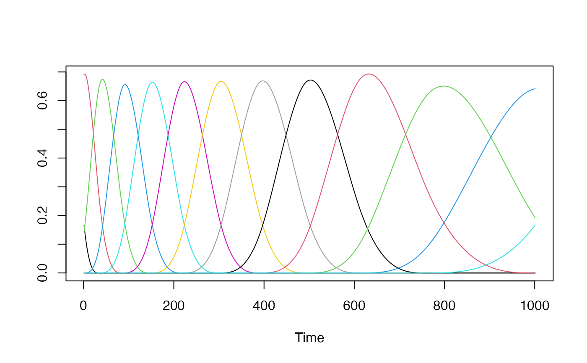
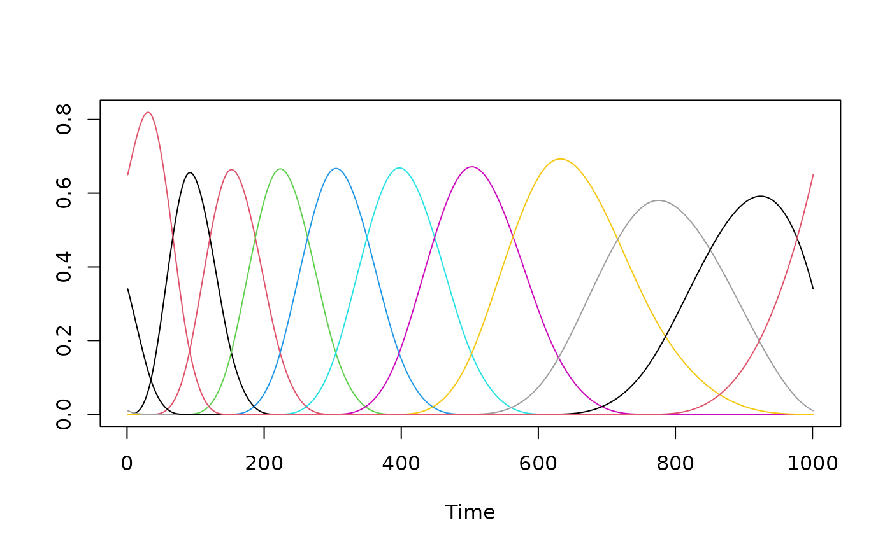

This function creates a B-Spline matrix.
Usage
splines2_basis(x, knots, deg, periodic = FALSE, intercept = TRUE)
Arguments
- x
Vector of values.
- knots
Vector of knots.
- deg
Degree of the Spline functions.
- periodic
Whether the basis should be periodic or not.
- intercept
Whether the firs column should be kept.
Value
Returns a matrix of B-Spline basis functions.
Examples
n <- 9
deg <- 3
mu <- 0.35
x <- 0:1000 / 1000
knots <- make_knots(n, mu = mu, deg = deg)
B <- splines2_basis(x, knots, deg)
ts.plot(B, col = 1:dim(B)[2])

# Periodic Case
B <- splines2_basis(x, knots, deg, periodic = TRUE)
ts.plot(B, col = 1:dim(B)[2])
